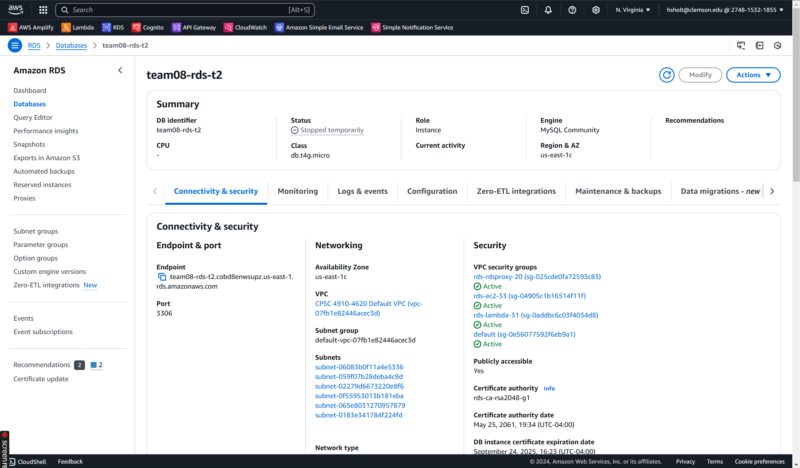
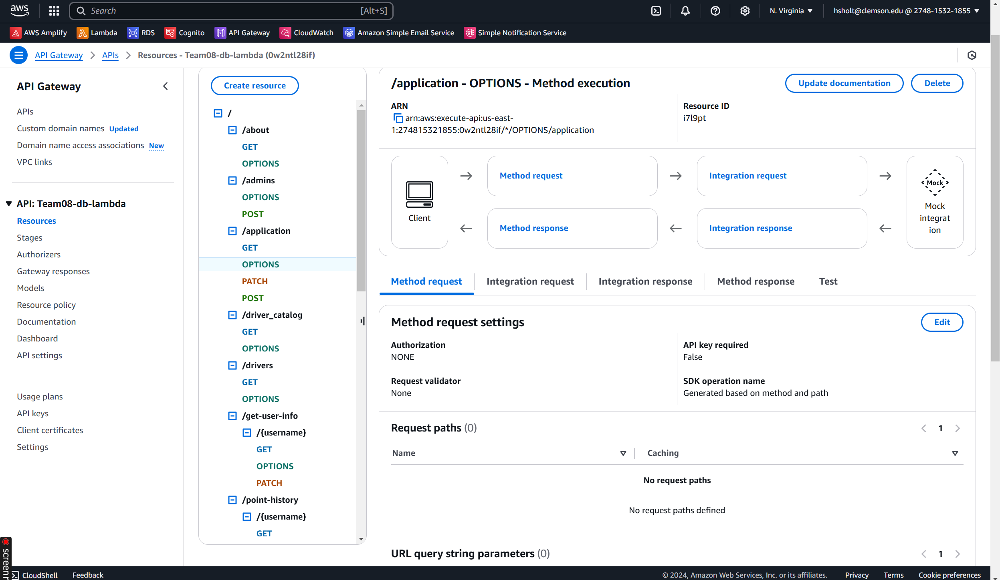
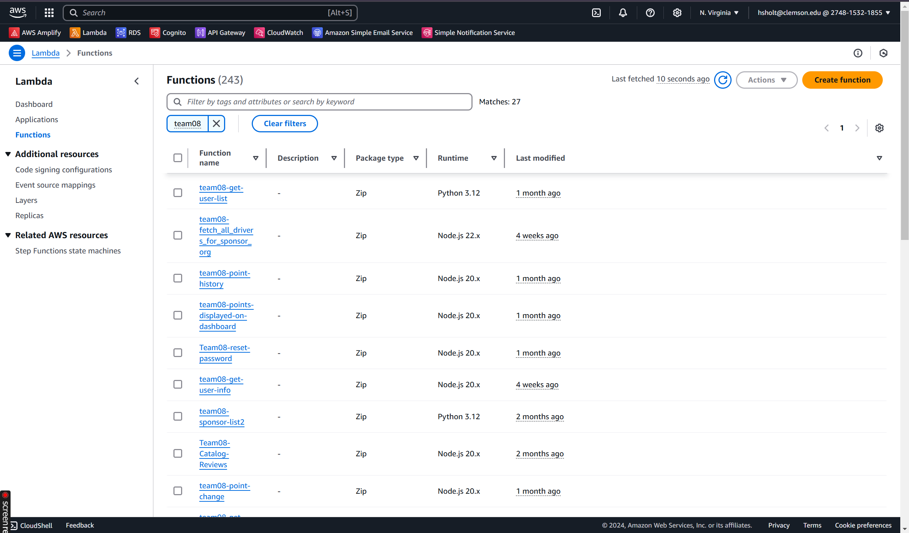
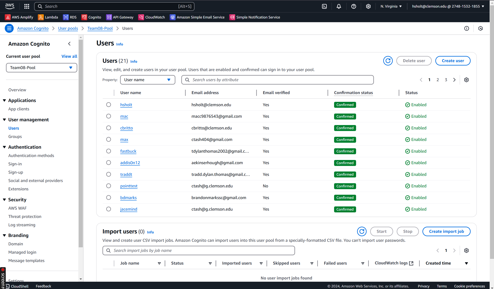
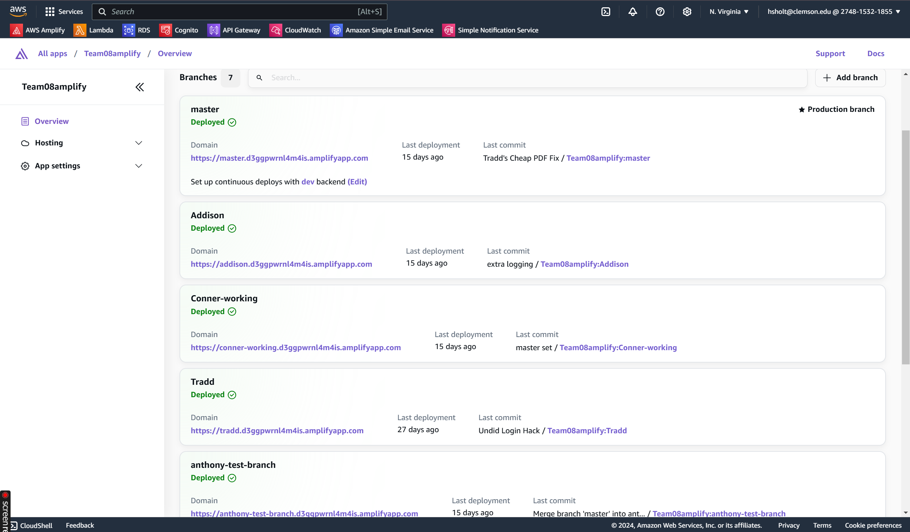
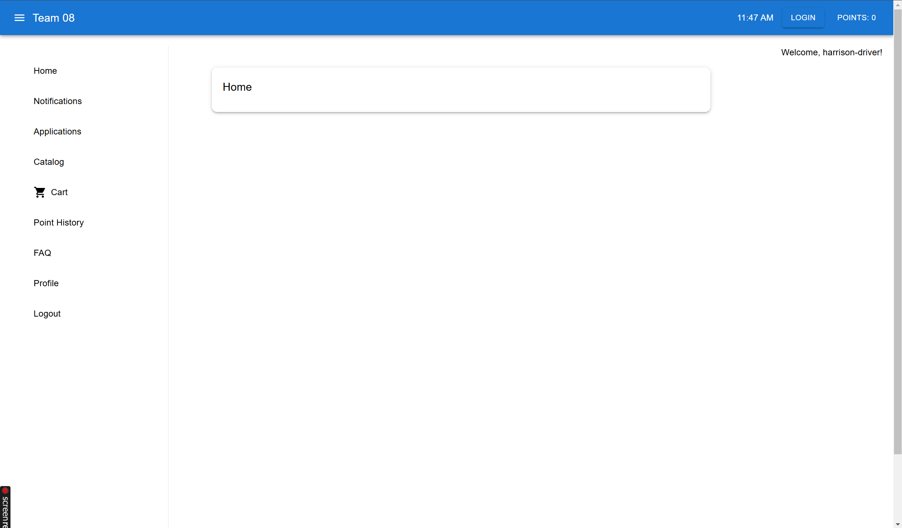
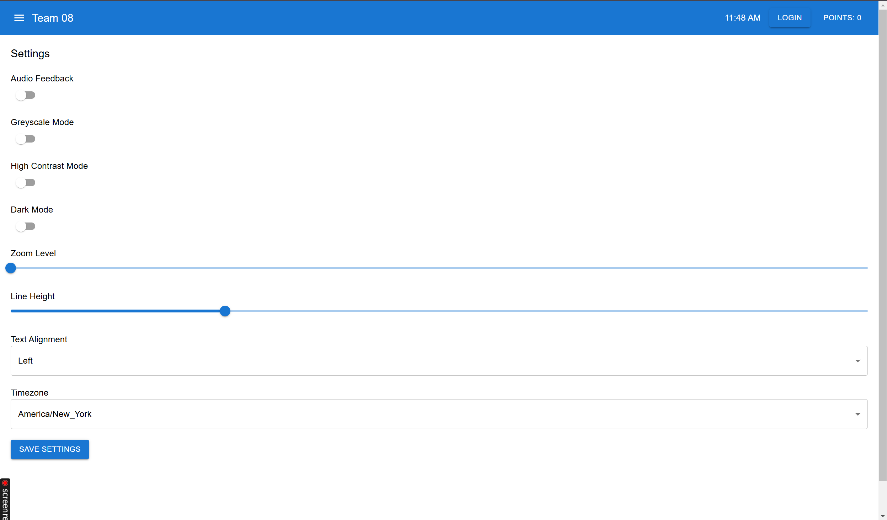
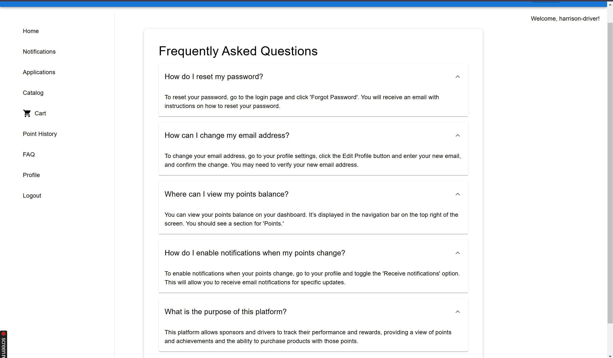
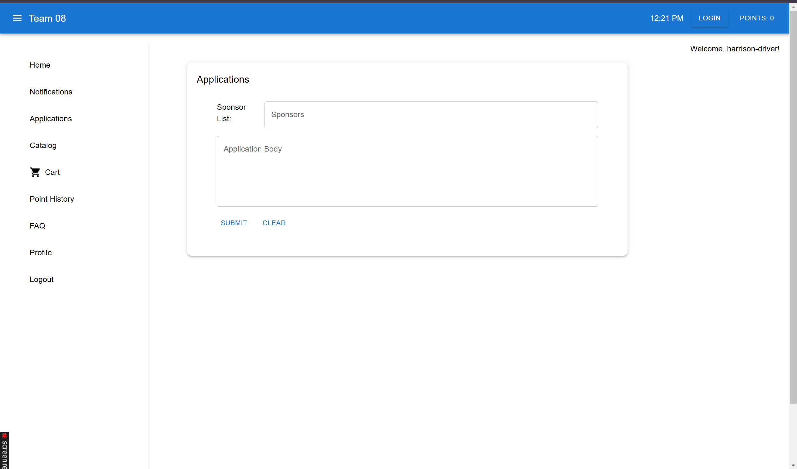

This Project will be completed in the Course CPSC 4910- Senior Computing Practicum. This project will be completed in a group of 5 members. This page will be updated as we finish each phase/milestone. Stay Tuned for updates!
The Good Driver Incentive Program is a web application that encourages better driving behaviors among truck drivers by awarding points for positive actions. These points can be redeemed for products in a sponsor-managed catalog.
Drivers: can log in to the system, view and update their profiles, track their points, and browse their sponsor's catalog to redeem points for rewards. They can also view the status of their purchases and manage their orders.
Sponsor Users: oversee the drivers and manage the incentive programs. They can log in to review and update their own profiles, manage driver applications, approve or reject drivers, and adjust points based on driver performance. They also manage the product catalog by integrating with APIs for up-to-date product information, including prices and availability. Sponsors can assume the role of a driver to see the system from the driver's perspective, ensuring the program runs smoothly.
Admin Users: have the highest level of control, managing both sponsor and driver accounts. They can review and update profiles for all user types, handle security aspects like password resets, and monitor significant system events through audit logs. Admins ensure the overall integrity and security of the system by managing access, handling escalations, and generating detailed reports that track points, purchases, and system usage across all users.
We successfully completed the Good Driver Incentive Program project, delivering a fully functional web application that met all requirements and exceeded expectations. Our final demo showcased all key features, and we received an A grade for the project.
Project Status: Completed Successfully
For a detailed view of the projected release plan, you can view the Release Plan here. This document contains the full plan of what features will be completed in each sprint.
For a detailed list of all user stories, please view the User Stories Document. This document contains over 350 user stories outlining key features and functionality for the project.
Throughout this project, I have focused on several key areas:
Accessibility is a priority for our team. The features we have implemented are:
These features has been implemented in to ensure our application is accessible to all users, including those with disabilities.
We used AWS RDS with MySQL to securely store and manage all driver, sponsor, and catalog data.

API Gateway manages our backend endpoints, routing requests between the front end and AWS Lambda.

Lambda functions serve as our serverless backend, handling business logic and database queries.

Cognito ensures secure authentication and authorization for all user roles.

AWS Amplify was used for hosting and continuous deployment of the frontend, integrating seamlessly with the backend services.

Below are screenshots showcasing key features of the web application:

Web App Home Screen

Accessibility Settings Screen

FAQ Screen

Applications Screen